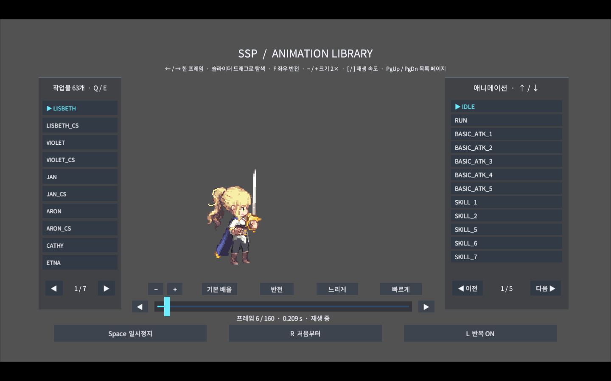
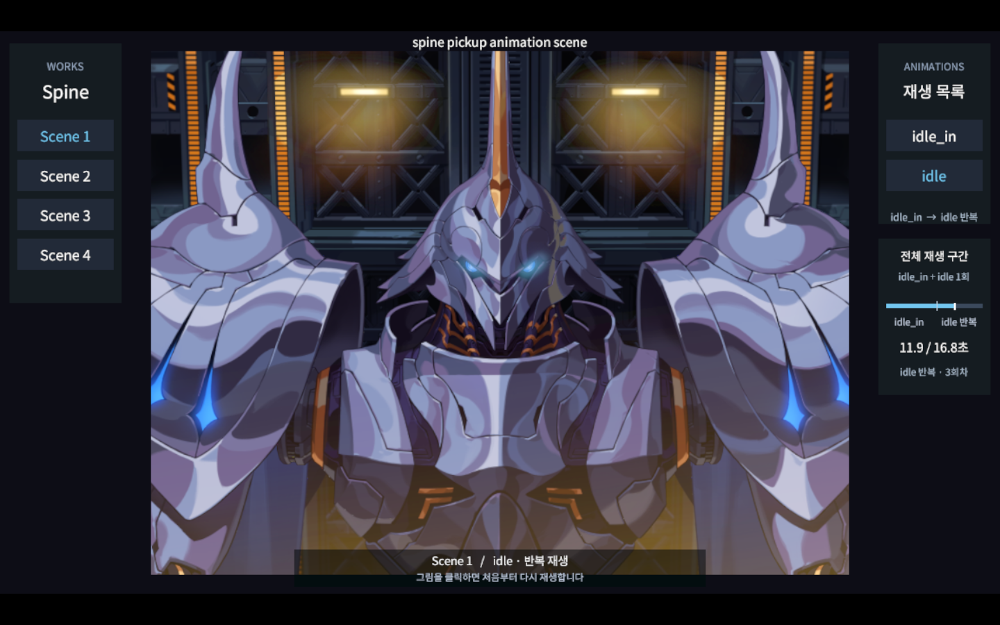
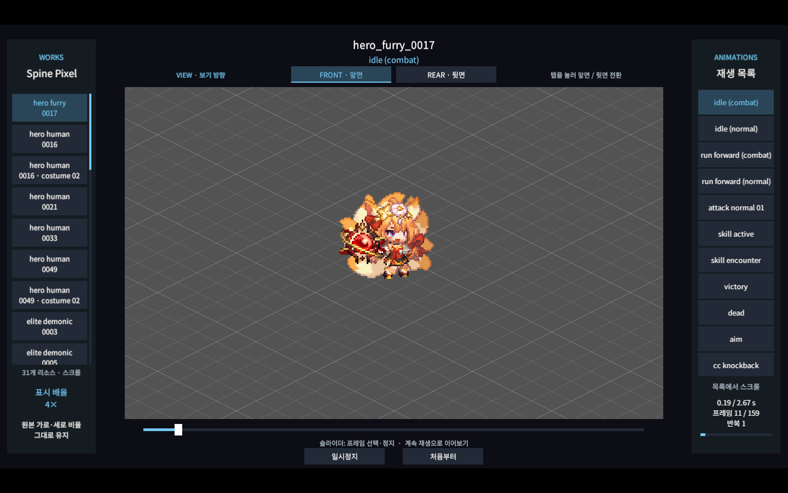
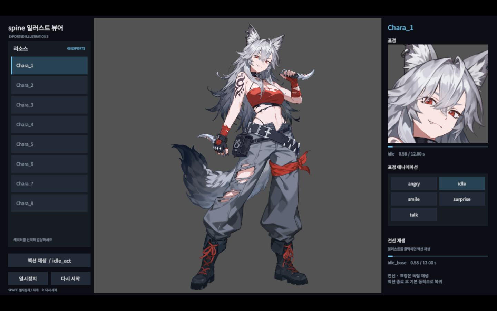

01 / SSP재생이 안 되나요?
처음에는 작업물을 불러오는 시간이 필요합니다. 새 창에서 보기
인게임 픽셀 애니메이션
본 기반 벡터 애니메이션 툴 OPTPiX SpriteStudio Pro를
사용한 인게임 픽셀 애니메이션 작업.
조은일 · 2D 애니메이션 포트폴리오
픽셀 캐릭터부터 일러스트와 가챠 연출까지.
캐릭터의 움직임과 표정을 만드는 애니메이션 작업.

THE COLLECTION
네 개의 작업물을 자동으로 불러옵니다. 전체화면으로 크게 감상해 보세요.
처음 방문하면 로딩에 시간이 걸릴 수 있습니다.

01 / SSP처음에는 작업물을 불러오는 시간이 필요합니다. 새 창에서 보기
본 기반 벡터 애니메이션 툴 OPTPiX SpriteStudio Pro를
사용한 인게임 픽셀 애니메이션 작업.

02 / SPINE PIXEL처음에는 작업물을 불러오는 시간이 필요합니다. 새 창에서 보기
Spine을 사용한 인게임 캐릭터 픽셀 애니메이션 작업.
뷰어의 front / rear로 앞면과 뒷면을 전환할 수 있습니다.

03 / SPINE ILLUST처음에는 작업물을 불러오는 시간이 필요합니다. 새 창에서 보기
스테이터스 창 및 다이얼로그 샷 용 표정 애니메이션.
뷰어에서 전신을 클릭하면 인터랙션 동작이 재생됩니다.
처음에는 작업물을 불러오는 시간이 필요합니다. 새 창에서 보기
캐릭터 가챠 연출 애니메이션 작업.
뷰어 화면을 클릭하면 처음 연출로 다시 재생됩니다.
TOOLS OF THE TRADE
Esoteric Software Spine 4.2/OPTPiX SpriteStudio Pro
CONTACT